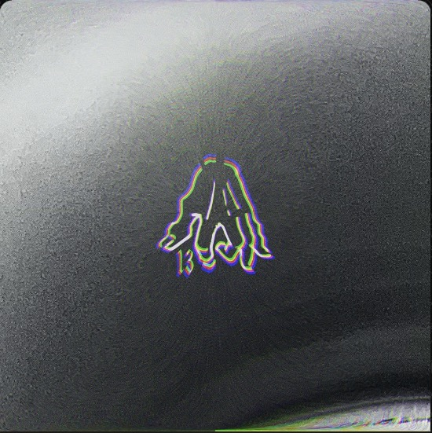
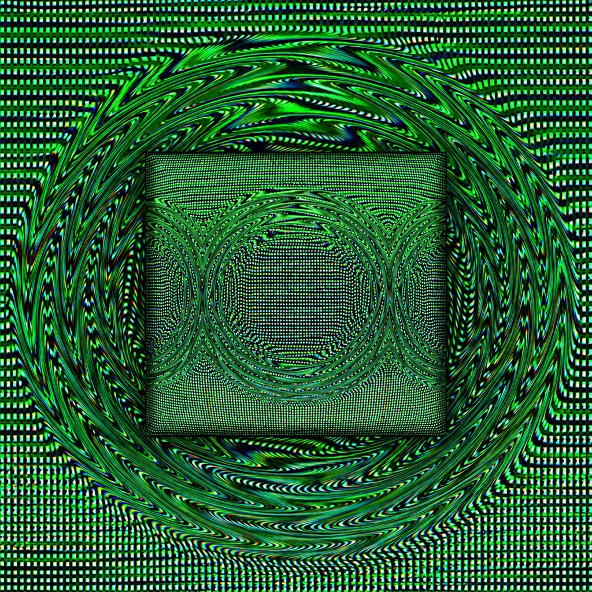

Tom Koenrades

I’m making the visuals for Tom Koenrades’ upcoming album. This is a work in progress, so more will show up here as it comes together.


I’m making the visuals for Tom Koenrades’ upcoming album. This is a work in progress, so more will show up here as it comes together.
